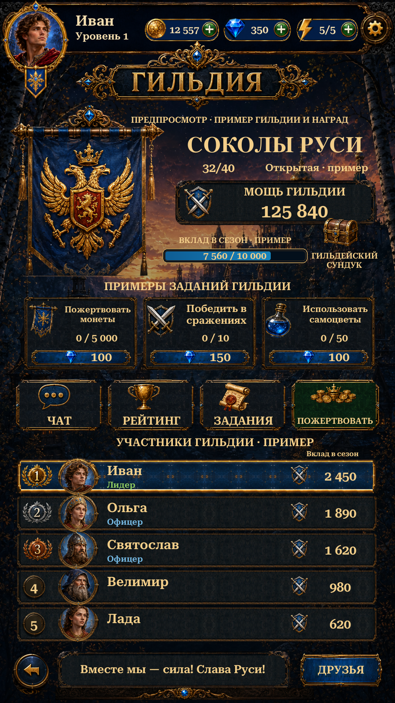

Visual Page 21 · Team Hub
The native Guild page uses the original banner, Russian title, portraits and icons, a clean scenery plate, and live account balances. Guild membership, contribution and rewards are labelled examples. Chat, ranking, friends and account controls follow the existing routes.
Implementation and checks · Asset provenance · Scenario jobs and cost · Reference comparison

Actual Unity Play Mode · 941×1672 · Russian · isolated test save.4 Edit Mode and 10 Play Mode tests passed, including Ranking regressions. Eight Team Hub captures cover Russian, English, safe areas, maximum balances and unavailable-feature explanations. Scenario: 18 jobs, 74 CU. No APK build or physical phone testing.
This is an initial implementation, not a pixel-exact replica. Selected live fonts, reused roster frames and medals, reconstructed portrait caps, footer actions and generated scenery retain documented differences. Online guild tasks, donations, chest claims, membership and chat services remain future work.